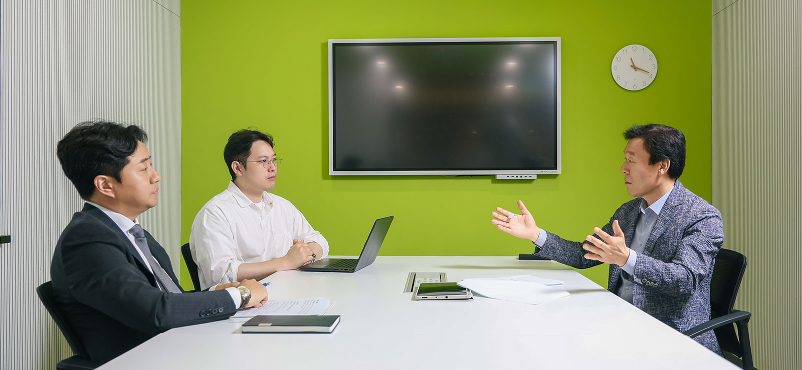
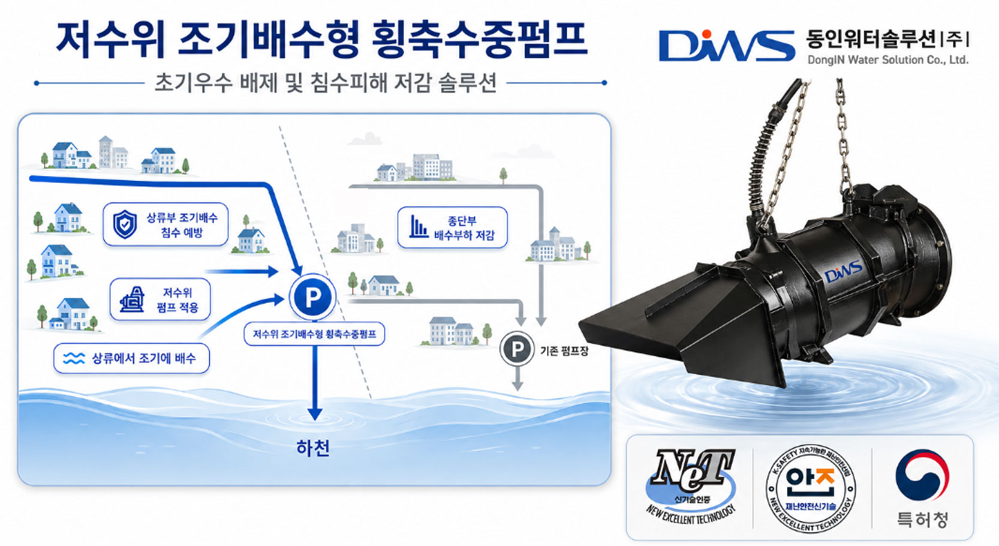
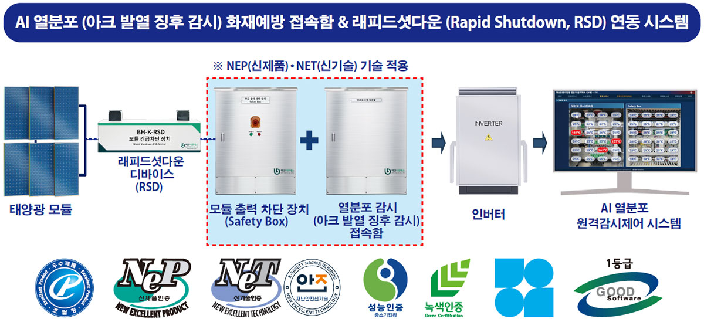
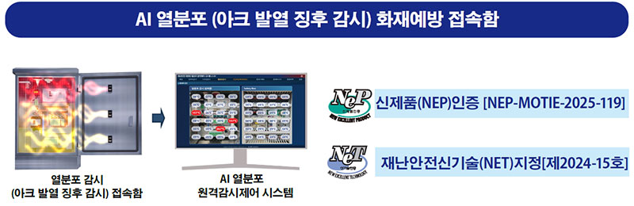
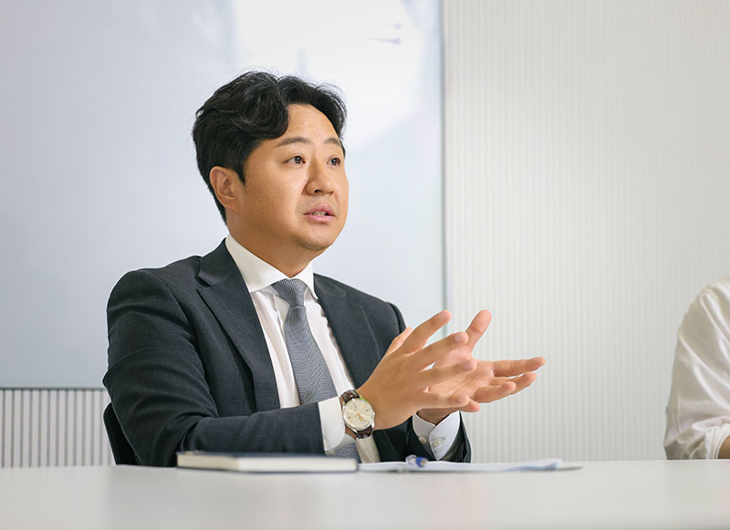
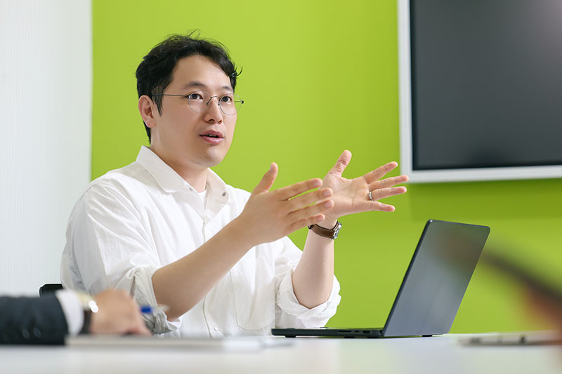
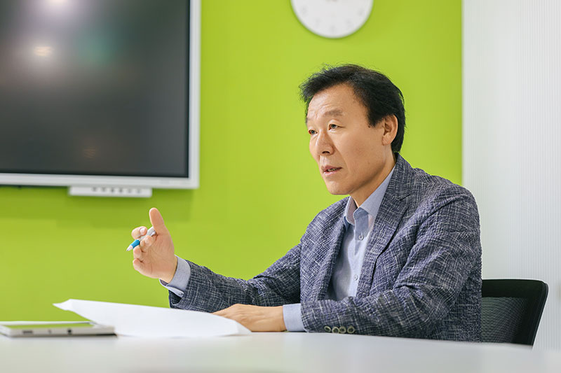

기후위기가 일상이 된 시대, 재난은 더 이상 예외적 사건이 아니다. 국지성 폭우, 폭염, 대형 산불이 반복되는 가운데 도시 인프라의 노후화와 초고령화 사회라는 구조적 위험까지 겹치며 재난의 양상은 빠르게 바뀌고 있다. 현장에서 배수·펌프 인프라와 태양광 발전 안전 솔루션을 개발해 온 산업계와, 재난안전 정책을 연구하는 학계가 한자리에 모여 기후재난의 현실과 기술의 역할, 그리고 산업 생태계가 나아가야 할 방향을 짚었다.
기후위기 시대, 재난은 어떻게 달라지고 있나
“예측 불가·복합화·대형화… 노후 인프라와 고령 사회가 위험을 키운다”
(박상진 부연구위원, 이하 ‘박상진’) 최근 재난의 특성을 세 가지로 정리할 수 있습니다. 첫째는 예측 불가능성, 둘째는 복합성, 셋째는 대형화입니다.
이를 만들어내는 핵심 동인은 크게 두 가지 정도를 꼽을 수 있습니다.
첫 번째는 기후위기의 가속화입니다. 국제기상기구(WMO)는 2024년 전 지구 평균기온이 산업화 이전
대비 약 1.5도 상승했음을 확인했습니다. 과학계는 1.5도 돌파를 기정사실로 보고 있어요. 1.5도를 넘는 순간 2도, 3도는 금방입니다. 전 세계에서 대형 산불이 잦아지고
풍수해가 상시적으로 늘어나는 것은 이런 흐름과 무관하지 않습니다.
두 번째는 인프라와 사회 전체의 노후화입니다. 서울의 경우 2036년이 되면, 노후 인프라의 비율이 86%가
된다는 연구 결과도 있습니다. 과거에 지어진 건물이나 구조물은 설계 수명이 30~50년이고, 그보다 짧은 것도 많죠. 여기에 기후변화로 인한 극단적 강우나 폭염이 더해지면 노후
인프라는 훨씬 빨리 한계에 도달합니다. 그리고 사람도 나이를 먹습니다. 경남 산불 당시 화재 확산 속도가 시속 8km가 넘었는데, 고령층은 이런 속도를 따라 대피하기 어렵습니다.
재난 피해가 고령층에 집중된 이유 중 하나죠.
(김현철 대표, 이하 ‘김현철’) 현장에서 가장 크게 체감하는 변화는 강우 패턴입니다. 예전에는 비가 예측 가능한 패턴이었다면, 지금은 한 지점에
국지적으로 집중해서 쏟아집니다. 우리나라만의 문제가 아니라 일본, 필리핀 등 태풍 경로에 있는 국가들이 공통으로 겪는 현실이에요.
도시 침수는 단순히 비가 많이 오는 문제만이
아닙니다. 도시가 고밀화되고 지하 공간이 늘어나면서 불투수(빗물이 땅속으로 스며들지 못하는) 지역이 확대됐고, 물이 낮은 지역으로 몰리는 속도가 훨씬 빨라졌습니다. 과거에 비해
동일한 강우에도 배수 여유가 줄고 침수 위험이 커졌죠. 결론적으로 기후재난은 도시가 상시적으로 관리해야 하는 인프라 리스크가 됐습니다. 대응의 패러다임도 피해 후 복구에서 위험
수위 도달 이전에 시간을 버는 ‘예방 중심’으로 바뀌어야 합니다.
(박영 이사, 이하 ‘박영’) 태양광 산업도 마찬가지입니다. 예전 고객들은 발전 효율을 1%라도 높이는 데 집중했습니다. 그런데 지금은 ‘내 자산을 지키는 것’이 목적이 됐어요. 폭우나 폭설이 오면 태양광 설비에서 가장 화재가 많이 나는 접속함 내부에 결로와 수분이 침투하면서 노후화를 촉진하고, 아크 등으로 인한 화재로 이어집니다. 경남 산불 때는 저희가 설치했던 수상 태양광 프로젝트 현장 설비가 하룻밤 사이에 전소됐습니다. 시속 8km의 강풍 앞에 대응이 불가능했던 거죠. 설치 후 보호도 중요하지만, 근본적으로 기후 변화를 늦추는 방안이 같이 논의돼야 한다고 생각합니다.

기술은 기후재난을 얼마나 줄일 수 있을까
“골든타임을 아끼는 기술, 예측 정확도를 높이는 데이터”
(김현철) 과거에는 수문이 잘 열리고 펌프가 잘 작동하는 개별 장비의 기능이 중심이었습니다. 지금은 다릅니다. 현장은 차단·배수·제어가 하나로 엮인
통합 방재 인프라를 요구하고 있습니다. 좁은 부지 설치 가능 여부, 도로 지하 매설 가능성, 지형에 맞는 제품 설계 등 요구 사항이 다변화됐어요.
저희가 주목한 것은 ‘소구역
블록 배수’입니다. 대형 펌프장이 있어도, 국지성 폭우가 쏟아지면 물이 펌프장까지 도달하기도 전에 상류나 저지대 블록에서 먼저 침수가 시작됩니다. 김해시는 이러한 개념을 국내
최초로 적용한 사례인데요. 상류부 침수취약 구간에 수위가 낮을 때부터 먼저 물을 빼낼 수 있는 횡축수중펌프를 배치해, 대형 펌프장 하나에만 의존하는 기존 방식을 보완했습니다. 결국
소구역 블록 배수는 대형 펌프장을 대체하는 게 아니라, 침수가 취약한 구간에서 수위가 낮을 때부터 선제적으로 물을 빼내 부담을 분산하고, 침수 피해를 줄이는 역할을 하는 겁니다.

(박영) 태양광 화재의 90% 이상은 접속함에서 발생합니다. 소방청 통계에도 화재 원인의 70~80%가 전기적 요인이라고 보고 있어요. 지금까지의
기술은 화재가 난 뒤 차단하는 사후 조치였다면, 저희가 개발한 AI 기반 열분포 감시 시스템은 사전에 막는 예방 기술입니다.
접속함 내부를 적외선 카메라로 24시간 실시간
감시해 온도 이상 신호를 감지합니다. 일반 열화상 카메라가 한 점을 보는 방식이라면, 이 시스템은 CCTV와 적외선 카메라를 결합해 넓은 면적을 동시에 커버합니다. 기기 자체의
MCU(마이크로컨트롤러 유닛, 발전 설비의 전 과정을 제어하는 반도체 칩)가 연산을 처리해 숫자 데이터만 전송하기 때문에 서버 부담도 줄었습니다. 설정한 임계치에 도달하면 알림을
보내고, 사용자가 대응하지 못하면 자동 차단이 이루어집니다. 여기에 모듈 단의 급속차단장치(RSD)까지 연동해 열원 자체를 끊어내는 구조입니다. 현재 상용화돼 판매 중이고,
데이터도 지속적으로 축적하고 있어요.


(박상진) 데이터 축적은 굉장히 중요한 포인트입니다. AI는 결국 범용 기술이고 핵심은 데이터의 품질이거든요. 글로벌 AI 관련 기업들이 한국의 양질의
산업데이터에 주목하는 것도 같은 맥락입니다.
기술이 재난 대응에 기여할 수 있는 두 가지 핵심은 골든타임 확보와 예측 정확도 향상입니다. 실제로 작년 1월 대구에서 산불이
대형화되지 않고 조기 진압된 데는 지능형 CCTV 기반 파이어워처(FIREWATCHER) 솔루션이 초기 발견을 6~7분 앞당긴 덕분이었습니다. AI, IoT, 드론, 디지털 트윈
등 다양한 기술이 각각 예방·감지·대응·복구 단계에서 사람을 지원하는 방식으로 발전하고 있습니다. 다만, 최종 판단과 대응에는 여전히 사람의 판단이 개입될 수밖에 없습니다.

태양광 화재의 90% 이상은 접속함에서 발생합니다. 지금까지의 기술은 화재가 난 뒤 차단하는 사후 조치였다면, AI 기반 열분포 감시 시스템은 사전에 막는 예방 기술입니다.
(주)백현이엔에스 박영 이사
재난안전산업은 왜 ‘성장산업’인가
“특허는 많지만 영향력은 부족… 테스트베드와 실증이 핵심”
(박상진) 재난안전산업은 분명 성장세입니다. 종사자 수, 업체 수, 매출액 모두 2018년 이후 꾸준히 증가하는 추세를 보이고 있습니다. 재난안전 관련
기술 특허 수도 중국, 미국에 이어 글로벌 경쟁력을 갖추고 있습니다.
그러나 양적인 지표가 우수한 반면, 특허 피인용 지수, 점유율 등 질적 영향력에 있어서는 상대적으로
경쟁력이 낮은 경향을 보입니다. 수출 비중도 좀처럼 늘지 않고 있습니다. 가장 큰 이유는 실증 기회의 부재입니다. 기술을 개발해도 현장에서 테스트할 수 있는 테스트베드가 턱없이
부족하고, 개발-인증-실증-수출로 이어지는 선순환 구조가 갖춰져 있지 않아요.
또 하나의 구조적 문제는 인식 격차입니다. 재난안전산업 실태조사에서 정부 지원 인증제도와 같은
재난안전산업 진흥정책들에 대해 모르거나, 불필요하다고 여기는 응답이 90% 이상으로 나타납니다. 또한, 영세 업체가 전체의 절반 이상을 차지하다 보니 자체 개발도, 인증 취득도
쉽지 않습니다. 정책과 현장 사이의 괴리가 상당한 거죠.
예방 투자의 경제적 효과도 중요한 포인트입니다. UN 재난위험감소사무국(UNDRR) 등 국제기구 보고서에 따르면 재난
예방에 선투자했을 때 그 효과가 투자 대비 4~15배에 달합니다. 직접 피해 복구비용뿐 아니라 간접적인 경제·사회적 피해까지 계산하면 예방이 훨씬 이롭다는 거죠. 인식이 ‘재난은
대응하고 복구하면 된다’에서 ‘예방이 최선의 투자’로 전환돼야 합니다.

데이터 축적은 굉장히 중요한 포인트입니다. AI는 결국 범용 기술이고 핵심은 데이터의 품질이거든요. 글로벌 AI 관련 기업들이 한국의 양질의 산업데이터에 주목하는 것도 같은 맥락입니다.
박상진 부연구위원
현장이 바라는 정책은 무엇인가
“입찰 구조 개선, 테스트베드 확충, 예방 예산 보장이 절실”
(김현철) 좋은 기술도 공공 현장에서 실증할 기회가 부족하면 신뢰를 쌓기 어렵고, 실증 결과가 실제 발주와 판로로 이어지지 않으면 산업으로 성장하기
어렵습니다.
펌프는 관급 발주 과정에서 공법심의를 통해 적용 기술을 검토하는 경우가 많은데, 경제성 평가가 전체 공사비 절감 효과보다 제품비 중심으로 비교되는 경우가
있습니다. 저수위 조기배수형 횡축수중펌프는 제품비만 보면 높게 보일 수 있지만, 흡수정 규모와 굴착 깊이, 부지면적을 줄여 전체 공사비를 오히려 최적화할 수 있습니다.
최근
농어촌공사의 긴급복구 공사를 진행하면서도 사전예방의 중요성을 실감했습니다. 피해가 발생한 뒤 예산 확보부터 제작·설치·시운전까지 이어지다 보면 우기 전에 안정적으로 가동하기까지
시간이 빠듯합니다. 방재시설은 장마 전에 설치와 시운전까지 완료돼야 실제 재난 상황에서 작동할 수 있습니다. 사후 복구 중심에서 벗어나, 우기 전 가동을 목표로 한 사전예방 예산과
판로 지원이 필요한 이유입니다.
(박영) 저희도 테스트베드 문제를 절감하고 있습니다. 태양광 장비는 실제 발전소에서 실태 전력을 넣어봐야 제대로 테스트할 수 있는데, 현재는 회사
대표자의 개인 발전소에서 발전 손실을 감수하며 실험하는 게 현실입니다. 가상으로 태양을 만들 수는 없으니까요.
발주 구조도 개선이 필요합니다. 발주처가
EPC(설계·조달·시공) 건설사를 통해 일괄 발주하는 방식에서는, 아무리 좋은 인증 제품을 개발해도 건설사가 수익성을 이유로 채택하지 않으면 끝입니다. 인증 제품에 한해 분리
발주를 허용하거나, 공공기관에서 우선 도입해 레퍼런스를 쌓는 방식이 필요합니다. 저희는 재난안전신기술 인증을 거쳐 우수제품으로 등록된 덕분에 조달청을 통한 수의 계약이 가능해져
매출의 안정적 기반을 마련했습니다. 인증이 하나의 계단이 된 셈이죠.
(박상진) 정책의 핵심은 실증 환경 확충, 판로 개척 지원, 그리고 통합 관리 체계 마련입니다. 전국에 실증센터가 조금씩 생기고 있지만, 두 분이 말씀하신 것처럼 기업과 공공기관이 직접 연계되는 현장 실증 구조가 돼야 합니다. 또한 세계 최대 IT·가전 전시회 CES 혁신상 등 세계에서 인정 받는 국내 재난안전 기업들이 꽤 있지만, 정작 해외 박람회나 수출 지원 채널과 연결되지 않아 각자도생하는 경우가 많습니다. 재난안전산업 전담 진흥원 설립이 논의되고 있는데, 그런 통합 관리 체계가 생긴다면 기업 발굴부터 인증, 실증, 수출까지 선순환 구조를 만들 수 있을 것입니다.
좋은 기술도 공공 현장에서 실증할 기회가 부족하면 신뢰를 쌓기 어렵고, 실증 결과가 실제 발주와 판로로 이어지지 않으면 산업으로 성장하기 어렵습니다.
동인워터솔루션(주) 김현철 대표

상시적 기후위기 시대, K-Safety의 미래
“예방과 복구의 선순환, 그 중심에 현장 기반 기술이 있다”
(박상진) 앞으로 유망한 분야는 두 가지입니다. 하나는 예측·예방 분야입니다. AI와 IoT가 결합한 조기 감지·차단 기술은 빠르게 성장할 것입니다. 다른 하나는 복구 솔루션입니다. 노후 인프라를 복구할 때 단순 복구가 아니라, 더 튼튼하고 기능이 강화된 방식으로 재건하는 수요가 커질 수밖에 없습니다. 복구가 곧 예방이 되는 구조를 만들어야 한다는 것이죠.
(김현철) 현장에서도 정확히 같은 고민을 하고 있습니다. 긴급 복구 시 일정에 쫓겨 기존 방식으로 그냥 대체하는 게 아니라, 기술적으로 더 나은 방식으로 바꿔야 진짜 예방이 됩니다. 앞으로 저희 제품에 AI를 탑재하는 방향도 적극 검토 중이고, 오늘 이 자리에서 그 가능성을 더 구체적으로 확인했습니다.
(박영) 오늘 대담을 통해 배수 인프라, 태양광 안전, 정책 연구가 사실 하나로 연결돼 있다는 걸 다시 느꼈습니다. 기후재난이 상시화된 시대에 우리 각자가 가진 기술과 경험이 유기적으로 결합될 때, 진정한 K-Safety의 경쟁력이 만들어질 수 있다고 생각합니다.